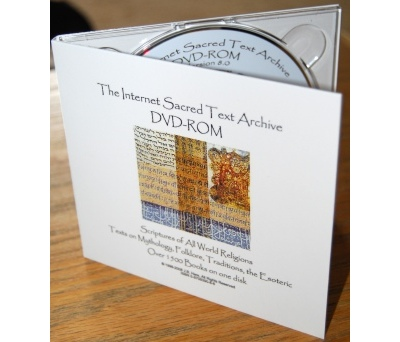

|
Buy CD-ROM Buy books about Islam
Not many primary Shiite texts were translated into English during the 19th century. The following are translations of Shiite documents, prepared by a volunteer for sacred-texts [TJ]. The views expressed are those of the translator, and the translations are presented without any editing. The copyright status of these texts is dubious, so these files are made available here for research purposes only, not for republication. The Prophets, Their Lives and Their Stories,by Abdul-Sâhib Al-Hasani Al-'âmili A book of Shiite lore about the prophets, starting with Adam. The Call of Kumayl A Shiite prayer, with English translation and Arabic text. The Conference of Baghdad's Ulema A conference where Sunni and Shiite views of Islam were debated. The Battle of Karbala The story of a crucial battle which Shiites commemorate to this day. The Prayer of Abu Hamzah A prayer usually read on nights of Ramadan. The Alawite Boook by Ali bin Abi-Talib A collection of duas (prayers). 2500 Adages of Imam Ali A collection of traditional sayings of Ali. |
Hold the world's wisdom in the palm of your hand. Over 1700 books. |
| On Twitter, follow 'sacredtexts.' |
| Sacred-texts on Facebook |
|
|
|
search powered by |
|
 Buy a DVD or USB 1700+ books. Support this site. |
{kind=link}